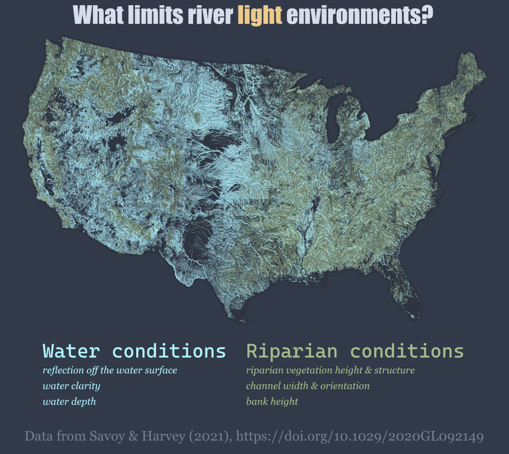
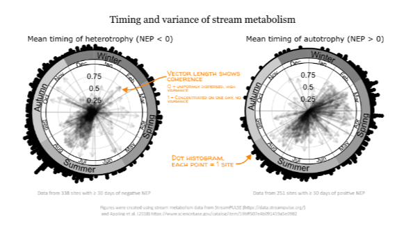
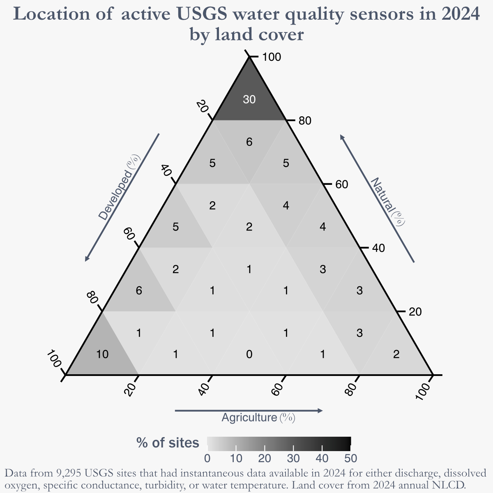
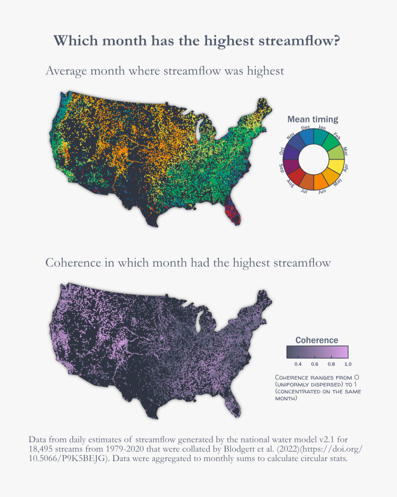
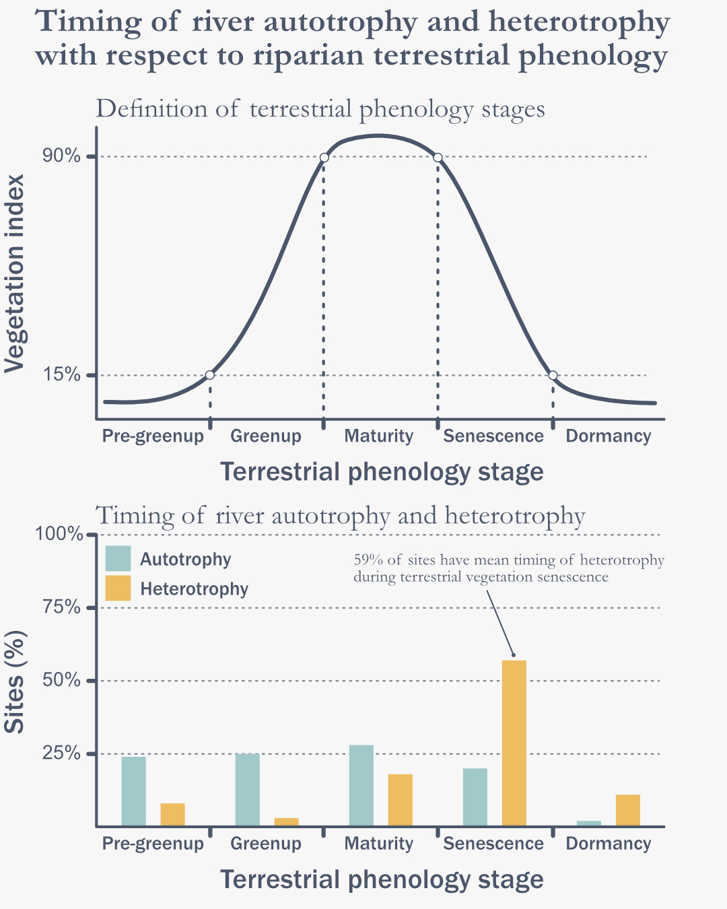
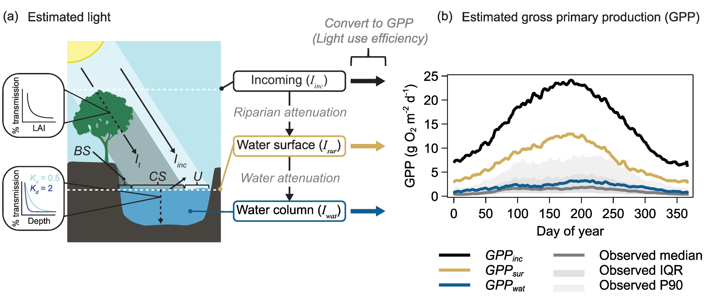
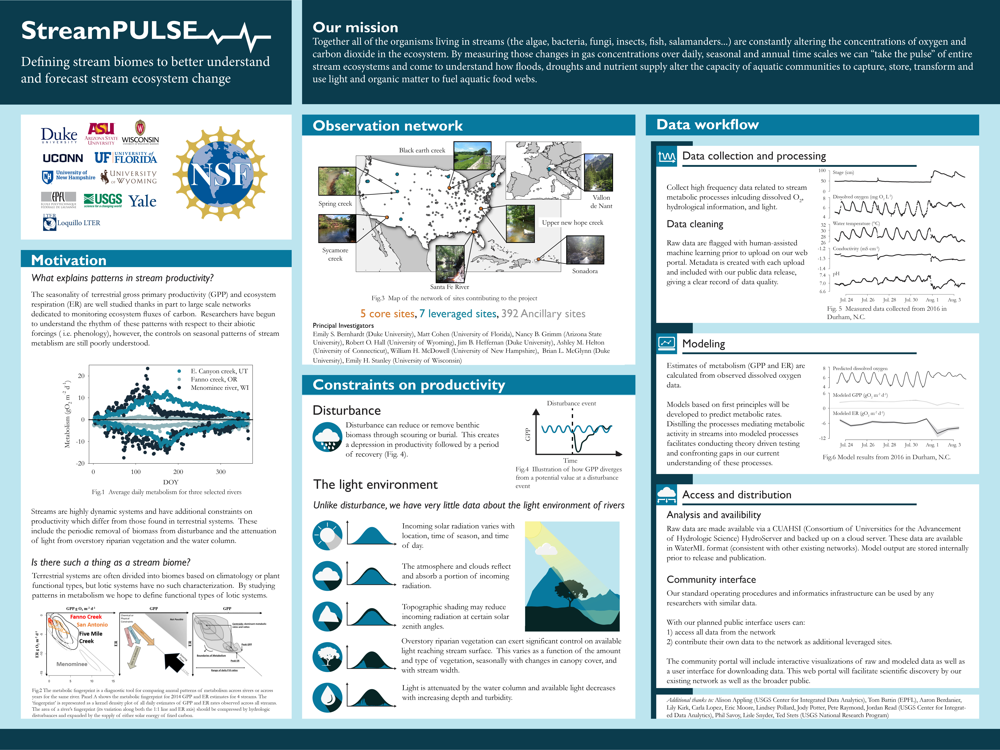

River Light Constraints
The conversion of solar energy to chemical energy by primary producers is a fundamental piece of carbon cycling and
energy flow within ecosystems, but river autotrophs often only receive a small fraction of incoming sunlight. Lighting
conditions within rivers are influenced by many factors including the size and shape of the river itself, surrounding
riparian zones, and changing water conditions.
A few years ago, I designed a model predict light available for river primary producers and used the model to infer
whether productivity was most limited by riparian zones or water column processes for over 2 million reaches in the
US.
We found that water column processes most limited productivity for 50% of the nation’s river length and 80% of its
surface area. At the time we found some variations across the country that appeared to be driven by forest cover, but
I
thought it would be interesting to visualize predictions using national hydrography flowlines. This was a fun exercise
to revisit some old work and look at it in a new way.
If you are interested in learning more about this model or our results, you can find our paper
here.

Timing and variance of stream metabolism
River ecosystem metabolism is useful for understanding energetics and carbon cycling in flowing waters.
Net ecosystem production (NEP) provides information on whether a river is autotrophic (NEP > 0) or heterotrophic (NEP < 0)
and carbon dynamics within the ecosystem. Are there any consistent patterns in the timing of autotrophy or heterotrophy?
I used circular statistics to calculate the mean timing of days with positive or negative NEP for a few hundred rivers.
Additionally, the coherence (or dispersion) was also calculated to see if the timing of these events was concentrated in
a specific time of year for each site.
A total of 44% of sites had a mean timing of autotrophy in summer and another 38% in spring. By contrast, 40% of sites
had a mean timing of heterotrophy in summer and 37% in autumn. While summer has high percentages of both autotrophy and
heterotrophy, it appears that positive NEP is more likely to happen in the spring and negative NEP in the autumn.
This is a simple conclusion in agreement with conceptual understanding of biogeochemical cycling, but useful to see it
so clearly highlighted in the data.

organic onions
I looked at all active CONUS NWIS sites in 2024 that were recording common water quality measures
(discharge, dissolved oxygen, specific conductance, turbidity, water temperature) to see what the
surrounding land cover was. 46% of sites were situated in areas where natural land cover was the
dominant (>=60 %) class. By contrast, only 9% of sites were located where agriculture was the dominant class.
If you are interested in a deep dive into global bias of stream gauge locations, check out
Krabbenhoft et al. (2022)
for an excellent analysis.

Average month with highest streamflow
Which month has the highest streamflow? I used retrospective estimates of streamflow
from the national water model for 18,495 U.S. streams spanning 1979-2020 to visualize
this question. Since modeled streamflow was used, I calculated all circular statistics
based on total monthly streamflow instead of using daily estimates.
If you are interested in this kind of analysis using observed data, I would highly
suggest reading Villarini (2016).

Terrestrial phenology and river metabolism
I used MODIS vegetation dynamics data to get stages of terrestrial phenological development
at each site (e.g. greenup or senescence) and determined which stage of development autotrophy
and heterotrophy occurred in.
Autotrophy was relatively evenly distributed throughout phenological stages, with about 25% of
sites falling into each stage outside of dormancy. By contrast, 59% of sites had their mean
timing of heterotrophy occur during senescence. The prevalence of heterotrophy during senescence
of terrestrial vegetation could be due to inputs of organic matter in the form of leaf litterfall.
If this topic interests you, Bertuzzo et al. (2022)
has a modeling study that looks into different sources of organic matter and river ecosystem respiration rates.

Modeling light limitations to river productivity
I developed a model to predict stream lighting conditions which accounted
for reductions in available light from adjacent riparian zones and within
the water column.
We used the model to predict river productivity directly from light availability
and show how accounting for successive attenuation of light from multiple sources
produces productivity estimates which much more closely resemble observed patterns
of river productivity.

StreamPULSE NSF macrosystems poster
This is a poster presented for a meeting of active macrosystems projects at the NSF head office.

AGU 2015 poster
Environmental conditions and plant biology interact to produce varied seasonal
patterns of leaf development. I found a positive relationship between leaf foliar
nitrogen and rates of canopy expansion. I then modeled rates of canopy expansion
based only on meteorological conditions and foliar nitrogen at 17 sites
across different biomes. Modeled estimates of canopy expansion rates were
very strongly correlated to observations for all 93 site-years of data.
AGU 2013 poster
I modified a simple prognostic phenology model to predict the seasonality of leaf area index.
The model was tested at 5 sites and modeled estimates were very strongly correlated to observations.
This work showed that a simple model was able to predict the timing and magnitude of canopy phenology
using only meteorological data and some basic data-driven assumptions about how temperature, light,
and water stress limit plant development.